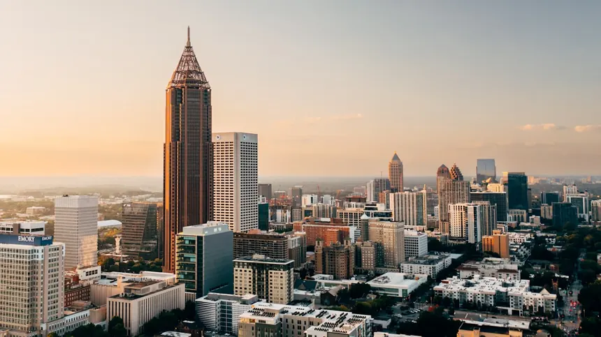

Quick answer
For Atlanta World Cup planning, use MARTA rail to reach Mercedes-Benz Stadium, treat budget ranges as planning estimates, and prioritize Midtown or Downtown if stadium access matters most.
Atlanta is one of the best-positioned cities in the 2026 World Cup host roster for independent travelers. Hartsfield-Jackson Airport has direct connections from virtually every major city on earth — it is the world's busiest airport by passenger traffic. MARTA rail goes directly to Mercedes-Benz Stadium, removing the single biggest match-day headache. And the city's price point sits comfortably below Miami, LA, and New York, while offering a stronger cultural and culinary scene than many of its US co-hosts.
This guide covers everything you need from the moment you land: real budget estimates at three spending levels, a complete MARTA guide for match day, the best neighborhoods to stay in, hotel strategy, top attractions, and a 3-day itinerary that combines the match with the best Atlanta has to offer.

Atlanta Travel Budget — 2026 World Cup
The figures below reflect daily per-person estimates for accommodation, meals, local transport, and basic activities — excluding flights and match tickets. Hotel prices will be notably higher on match nights than non-match nights; the ranges below reflect a blended average assuming a 4–5 night stay with 1–2 match days included.
- Hostel dorm or budget motel: $55–$80/night
- Casual meals (food halls, fast casual): $20–$35/day
- MARTA transit: $2.50/ride (Breeze Card)
- Free or low-cost attractions
- 1–2 budget beers/coffees: $10–$15
- 3-star hotel in Midtown/Downtown: $130–$180/night
- Sit-down meals + drinks: $50–$80/day
- MARTA + occasional rideshare: $12–$20/day
- Georgia Aquarium, Coca-Cola World: $40–$60
- Cocktails + evening out: $25–$40
- 4–5 star hotel (Loews, W, Four Seasons): $280–$500+/night
- Fine dining + cocktail bars: $100–$180/day
- Rideshare/car service all transport: $40–$80/day
- Premium experiences + tours: $60–$120
- Rooftop bars + entertainment: $50–$100+
Match Night Premium: Hotel prices typically surge 80–150% on match nights compared to adjacent nights. If your travel schedule allows, consider arriving the day before a match and leaving 1–2 days after — you'll pay much lower hotel rates for the non-match nights and still get the full stadium experience.
See how Atlanta compares to all 12 other World Cup host cities — daily budgets, airport access, and crowd data in one place.
Full Budget Comparison — All 16 Cities →Getting to Atlanta
Hartsfield-Jackson Atlanta International Airport (ATL)
ATL is the world's busiest airport by passenger count and offers arguably the best international connectivity of any US World Cup host city. Direct flights operate from London Heathrow, Amsterdam, Frankfurt, São Paulo, Mexico City, Tokyo, and dozens of other international hubs. Delta Air Lines has its global hub here, meaning excellent domestic connections from any US departure city.
Airport to hotel options:
- MARTA Gold/Red Line (recommended): Direct train from Airport Station (inside the terminal) to Downtown/Midtown. Journey to Five Points (downtown hub): ~20 minutes. Cost: $2.50 with Breeze Card. Runs every 10–15 minutes. No baggage restrictions.
- Rideshare (Uber/Lyft): $30–$55 to Downtown, $35–$65 to Midtown depending on surge. Well-organized pickup zone on the domestic terminal lower level.
- Taxi: Fixed rate of $30 from ATL to inside the Downtown area (I-285 perimeter). Ask the dispatcher to confirm the flat rate before departure.
- Rental car: Available but strongly discouraged for match-day visitors — parking around the stadium is extremely limited on event days and the MARTA option is materially faster.
Getting Around Atlanta
MARTA — The Match Day Recommendation
MARTA (Metropolitan Atlanta Rapid Transit Authority) operates both rail and bus. For World Cup visitors, the rail system is the critical tool — it connects ATL airport, downtown, Midtown, Buckhead, and most importantly, goes directly to Mercedes-Benz Stadium.
🚌 MARTA Breeze Card: Purchase a reloadable Breeze Card at any station for $2 (non-refundable), then load value as needed. Each rail ride costs $2.50. A round trip from Downtown to Airport costs $5. Buy your card immediately upon arrival at ATL Airport Station — it pays for itself by the second ride.
| Route | Method | Time | Cost | Match Day? |
|---|---|---|---|---|
| Airport → Downtown | MARTA Rail | ~20 min | $2.50 | Best option |
| Airport → Midtown | MARTA Rail | ~25 min | $2.50 | Best option |
| Downtown → Stadium | MARTA to Vine City | ~10 min | $2.50 | Best option |
| Midtown → Stadium | MARTA + walk | ~18 min | $2.50 | Recommended |
| Airport → Stadium | MARTA Direct | ~30 min | $2.50 | Best option |
| Hotel → Stadium | Rideshare | 10–30 min | $15–$35 (surge possible) | Acceptable |
| Hotel → Stadium | Car + parking | Unpredictable | $40–$80 parking | Not recommended |
Rideshare in Atlanta
Uber and Lyft operate widely in Atlanta. For non-match-day exploration (visiting Ponce City Market, MLK Historic Site, Stone Mountain), rideshare is convenient and reasonably priced — typically $12–$22 for cross-city trips. On match days, expect 1.5x–2.5x surge pricing for trips near the stadium. MARTA eliminates this entirely for stadium access.
Atlanta in the Tournament Context
Atlanta is one of 11 US host cities across a 3-nation, 16-city tournament. Map shows host countries only — exact city locations are not shown at world-map scale.
Atlanta, GA — US host city
Mercedes-Benz Stadium — see details below
- 🇺🇸 United States — 11 cities
- 🇨🇦 Canada — 2 cities
- 🇲🇽 Mexico — 3 cities
Map shows host country outlines only. Atlanta's exact location within the US is not pinpointed at world-map scale.
Mercedes-Benz Stadium
Mercedes-Benz Stadium opened in 2017 and immediately set a new standard for major league venues in North America. Its retractable roof, massive HALO video board (the largest in the world at the time of opening), and sight-lines designed specifically to eliminate obstructed views make it one of the most technically impressive stadiums in the tournament.
- Capacity: 71,000 (World Cup configuration)
- Address: 1 AMB Drive NW, Atlanta, GA 30313
- Nearest MARTA Station: Vine City (Gold/Red Line) — approximately 0.6 mile walk along MLK Jr. Drive
- Parking: Limited on match days. Use the GWCC/Vine City MARTA lot for park-and-ride if you must drive.
- Food Pricing: Mercedes-Benz Stadium is known for its fan-first food pricing — $2 hot dogs and $3 waters have been a feature since opening. This is significantly below major US stadium norms.
- Stadium BeltLine: The Atlanta BeltLine connects through the Westside Trail near the stadium — walking from Midtown via BeltLine is possible for those who want to arrive on foot.
Pre-game atmosphere: The area around Centennial Olympic Park (adjacent to the stadium) functions as the central fan zone. The park hosted the 1996 Summer Olympics and has a history of major international events. Arrive 90+ minutes before kickoff to experience the full atmosphere before the match.
Best Neighborhoods to Stay
Midtown Atlanta
The most walkable part of Atlanta. Direct MARTA access (Midtown or Arts Center stations). Excellent restaurant density, rooftop bars, and the Fox Theatre.
Downtown Atlanta
Closest neighborhood to the stadium. Centennial Olympic Park, the CNN Center, World of Coca-Cola, and Georgia Aquarium all within walking distance. More business-hotel oriented.
Old Fourth Ward
Hip neighborhood with strong local restaurant and bar scene. BeltLine access. Slightly further from stadium but excellent value and character. Ponce City Market is the social hub.
Buckhead
Upscale hotels and dining. Great for luxury travelers. Buckhead Station on MARTA puts you one transfer from the stadium. The Four Seasons, Waldorf, and Loews anchor this area.
Virginia Highland / Inman Park
Residential, leafy, and local. Great restaurants, walkable to BeltLine. Best for visitors who want a less touristy Atlanta experience. No direct MARTA stop — rideshare to station.
Westside / Vine City
Walking distance to Mercedes-Benz Stadium. Limited hotel options currently but closest possible base to the venue. Best for travelers whose sole priority is stadium proximity.
📉 Before locking in your hotel location, check the Tourism Demand Index for crowd and pricing context — useful for understanding how early you need to book and what price trajectory to expect.
Check Crowd & Budget Pressure Data →Top Atlanta Attractions
Atlanta's non-football offerings are legitimately strong. This is a city with world-class museums, iconic food culture, a growing arts scene, and the history of the civil rights movement within walking distance of downtown hotels.
Georgia Aquarium
One of the largest aquariums in the world, home to whale sharks. Reserve tickets in advance — it sells out near major events. Allow 3–4 hours.
World of Coca-Cola
The official Coca-Cola museum with tasting room, exhibits, and the vault of the secret formula. Next door to the Aquarium — combine both in one day.
National Center for Civil and Human Rights
Profoundly moving museum covering the US civil rights movement and global human rights struggles. One of Atlanta's most important cultural institutions.
Atlanta BeltLine
A 22-mile trail system that repurposes former railway corridors into walking and cycling paths connecting 45 neighborhoods. Free access. Food trucks, murals, and parks along the route.
Ponce City Market
Atlanta's best food hall inside a converted 1920s Sears building. Dozens of local vendors, restaurants, and bars on multiple floors. The rooftop has mini-golf and great city views.
Martin Luther King Jr. NHS
A National Historic Site covering MLK's birthplace, Ebenezer Baptist Church, and his tomb. One of the most significant historical sites in the United States. Plan a full morning.
3-Day Atlanta Itinerary
This itinerary assumes you're attending one match and staying 3 nights. Arrival via ATL. Match day is Day 2 — adjust if your match falls on Day 1 or Day 3.
Settle In, BeltLine, and Southern Dinner
- Morning: Arrive ATL. Take MARTA Gold/Red Line to your hotel in Midtown or Downtown ($2.50).
- Afternoon: Walk the Eastside BeltLine Trail from Ponce City Market south toward Krog Street Market. Stop for lunch at one of the food vendors en route.
- Late afternoon: Check in and rest. Ponce City Market rooftop for sunset views and a drink.
- Evening: Dinner in Old Fourth Ward or Inman Park. Suggestions: Staplehouse (farm-to-table), Gunshow (modern Southern), or Boa Vista for upscale Brazilian steakhouse.
Pre-Game Culture + Mercedes-Benz Stadium
- Morning: Georgia Aquarium or National Center for Civil and Human Rights (book Aquarium tickets in advance). Both open at 9am.
- Afternoon: Head to Centennial Olympic Park 2 hours before kickoff. Food trucks, fan atmosphere, and the iconic rings fountain.
- Match time: Take MARTA to Vine City Station (10 min, $2.50). Walk to Mercedes-Benz Stadium. Grab a $2 hot dog inside — it's genuinely that price.
- Evening (post-match): Return by MARTA. Drinks in Midtown — Rooftop L on 22 or Ventanas both offer panoramic city views.
MLK Historic Site + World of Coca-Cola + Depart
- Morning: Martin Luther King Jr. National Historic Site — 2–3 hours. Free. One of the most important historical sites in the United States.
- Midday: World of Coca-Cola and a late lunch at Ponce City Market food hall (15 min Uber from downtown).
- Afternoon: MARTA Airport Station. Check in and depart.
Hotel Planning for Atlanta 2026
When to Book
Book Atlanta hotels as early as possible — ideally 9–12 months before your travel dates. Match nights will see aggressive pricing and properties within MARTA walking distance of the stadium or within a short rail ride will be the first to sell out. Don't wait for match schedule confirmation to start researching — by the time specific match dates are announced, the best value options will already be gone.
Hotel Booking Strategy
- Prioritize MARTA-accessible properties: Midtown and Downtown hotels on the Gold/Red Line remove match-day transportation anxiety entirely.
- Compare match night vs. non-match night rates: If you're flexible on dates, arriving 1–2 days before a match and leaving 1–2 days after gives you access to much lower hotel rates for the non-match nights.
- Check cancellation policies carefully: Hotels near stadium venues sometimes switch to non-refundable pricing during confirmed match periods. Understand the terms before committing.
- Consider the Midtown vs. Downtown trade-off: Downtown is closest to the stadium and Centennial Olympic Park. Midtown is more walkable, has a stronger restaurant/bar scene, and offers equivalent MARTA access. Both are strong choices.
Price reference: A typical 3-star Midtown hotel that costs $120–$140/night on a standard summer night will likely run $240–$380/night on confirmed World Cup match nights. Budget accordingly, or search for properties slightly further on the MARTA line (e.g., Inman Park or Buckhead) where rates will be lower.
Frequently Asked Questions — Atlanta 2026
Related Guides & Tools
Ready to Plan Your Atlanta Trip?
Compare Atlanta to other host cities, check crowd data, and build your full World Cup travel budget — all free on DreamVacati.